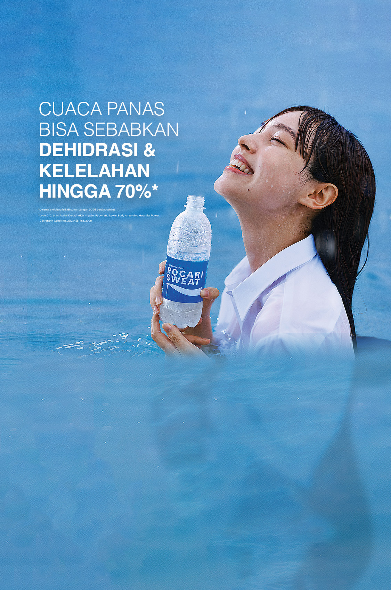

Web Pelajaran
Inflasi
- Pengertian Inflasi
- Inflasi adalah kenaikan harga barang dan jasa secara umum dan terus-menerus dalam suatu periode tertentu. Inflasi mengurangi daya beli uang karena nilai uang menurun.
- Penyebab Inflasi
- Berdasarkan Penyebab:
- Demand-pull inflation: Terjadi karena peningkatan permintaan barang dan jasa yang melebihi kapasitas produksi.
- Cost-pust inflation: Disebabkan oleh kenaikan biaya produksi, seperti bahan baku atau upah.
- Berdasarkan tingkat keparahan:
- Inflasi Ringan (di bawah 10% per tahun): Tidak terlalu memengaruhi ekonomi.
- Inflasi Sedang (10%-30% per tahun): Mulai mengganggu daya beli masyarakat.
- Inflasi Tinggi (30%-100% per tahun): Menyebabkan ketidakstabilan ekonomi.
- Hiperinflasi (di atas 100% per tahun): Menghancurkan sistem ekonomi.
- Berdasarkan asalnya:
- Domestik: Berasal dari dalam negeri, seperti gagal panen di suatu tempat atau faktor dalam negeri lainya.
- Eksternal: Berasal dari luar negeri, bisa dipicu oleh faktor-faktor global seperti krisis global.
- Dampak Inflasi
- Positif: Mendorong produksi jika inflasi terkendali dan menguntungkan bagi debitur karena utang menurun.
- Negatif: Menurunya daya beli masyarakat, ketidakpastian ekonomi bagi inventor, dan distribusi Pendapatan menjadi tidak merata.
- Cara mengatasi Inflasi
- Kebijakan Moneter: Menaikan suku bunga dan mengurangi jumlah uang beredar.
- Kebijakan Fiskal: Mengurangi pengeluaran pemerintah dan meningkatkan pajak.
- Kebijakan non-moneter&non-fiskal: Menjaga stabilitas produksi dan distribusi barang dan mengendalikan harga melalui subsidi atau kontrol harga.
Iklan
